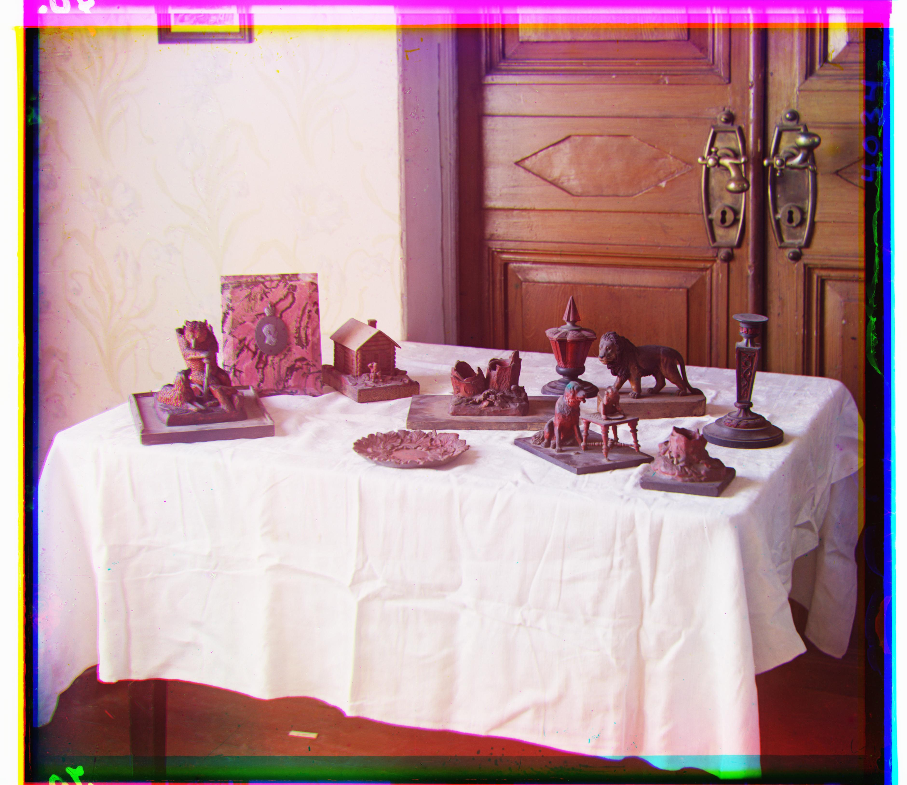
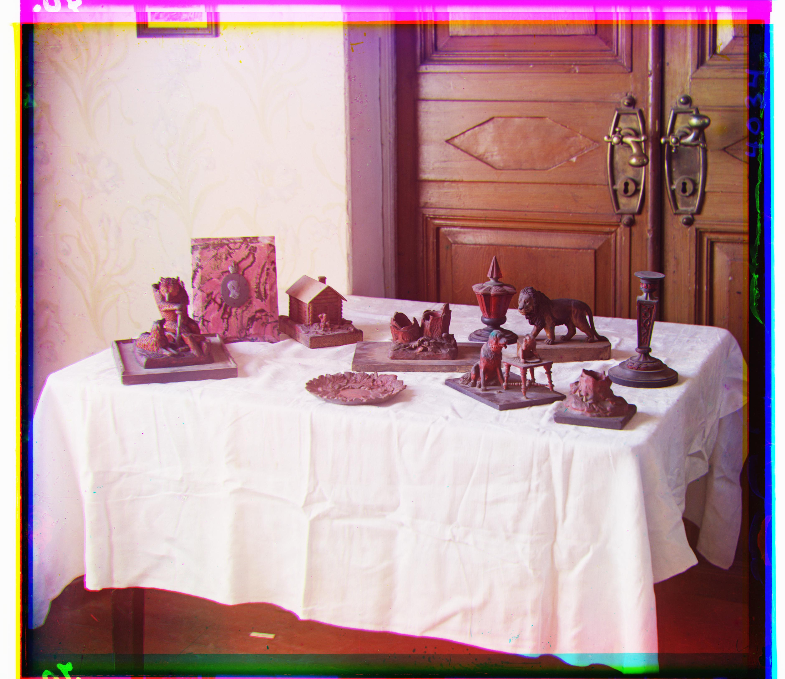

The Prokudin-Gorskii collection is thousands of photos of Russia in the early 20th century. Each photo in the collection is actually three snapshots that separately capture red, green, and blue light. This project uses code to align the three snapshots of a photo, producing a color version.
The pixel-by-pixel cross-correlation between two snapshots approximates their similarity. To find the best alignment of two snapshots, we displace one snapshot by varied horizontal and vertical pixel amounts. For smaller snapshots, brute-force displacement is fast enough. For larger snapshots, we employ a "pyramid" approach: an approximate alignment is found for very small versions of the snapshots, and the alignment is refined on successively larger versions.
The cross-correlation metric suffices for most photos in the collection. However, in some photos the snapshots differ heavily (e.g. because a large object in the photo is overwhelmingly blue). For these photos, cross-correlation may not accurately measure similarity. To combat this, we calculate the pixel-by-pixel gradient of each snapshot, yielding "edge-strength" snapshots. The cross-correlation metric works better on edge-strength snapshots than on the originals because snapshots from the same photo almost always display edges similarly even when they display brightness differently.Our other optimization is to only consider the center portion of each edge-strength snapshot when calculating the cross-correlation metric. This prevents the artifacts on the edge of each snapshot from influencing the metric.
Left: cross-correlation applied to original snapshots. Right: cross-correlation applied to edge-strength snapshots.


 
